Contacto

Descargar Curriculum Vitae
Descarga mi CV en formato PDF en el idioma de tu preferencia
Ingeniero Informático con Diplomado en Dirección y Administración de Proyectos y certificación Scrum Master Professional. Dominio de inglés intermedio con amplia experiencia en roles IT, con dedicación al desarrollo de soluciones de extracción, transformación y carga de datos (ETL), orientadas a la mejora continua, optimización y automatización de procesos, administración de repositorios, validación y análisis de flujos de datos para la continuidad operativa, con fuerte enfoque en metodologías ágiles y liderazgo técnico. Conocimiento aplicado en marcos regulatorios de protección de datos y Transformación Digital del Estado, integrando principios de privacy-by-design, interoperabilidad, gobierno y trazabilidad de datos en el diseño de arquitecturas y servicios. Experiencia en implementación de anonimización y pseudonimización de información, evaluaciones de riesgo en datasets, prompts y modelos GenAI, asegurando cumplimiento normativo, calidad y escalabilidad en soluciones de analítica avanzada, ingeniería de datos y servicios de inteligencia artificial generativa.
Ingeniería de Datos · Automatización · Escalabilidad · Calidad de Datos · Excelencia ETL
Optimización ETL · Gobierno de Datos · Analítica Cloud · Pipelines Escalables · Automatización Inteligente
Ingeniería de Prompts · Automatización Inteligente · Embeddings Semánticos · Sistemas Multi-Agente
Innovación GenAI · Estrategia de Prompts · IA Aplicada · Inteligencia Semántica · Diseño Multi-Agente · IA Responsable
Mentalidad Ágil · Mejora Continua · Liderazgo Técnico · Equipos de Alto Rendimiento
Liderazgo Ágil · Entrega Continua · Excelencia Scrum · Ejecución Lean · Empoderamiento de Equipos · Cultura de Innovación
Liderando proyectos de datos e IA en empresas de clase mundial
Diseño y optimización de prompts para modelos de lenguaje, desarrollando herramientas avanzadas basadas en lógicas de agentes, múltiples agentes colaborativos y análisis de similitudes mediante embeddings. Experiencia en la construcción de flujos inteligentes y sistemas que integran IA para resolver tareas complejas de manera eficiente.
Habilidades demostradas: Innovación, pensamiento estratégico, trabajo en equipo, y conocimientos avanzados en inteligencia artificial generativa.
Análisis de reclamos, integración y consolidación de datos, optimización de consultas, modelamiento de datos, preparación de insumos reportería, creación de dashboard, mejora continua.
Análisis de procesos, modelamiento de datos, desarrollo de pipelines, optimización de procesos, elaboración de dashboard, en distintos proyectos bajo metodologías ágiles.
Principales logros:
Análisis de procesos, estimación de esfuerzo, desarrollo de soluciones, documentación, migración de datos.
Gestión de mallas productivas, métricas e informes productivos, análisis y optimización de procesos. Modelamiento de control de gestión y mejoras continuas, análisis de proyectos, documentación.
Administrador soporte 2do nivel de procesos plataformas productivas, análisis de mallas sistemas informáticos, retoma de pautas productivas a nivel de scripts.
Procesamiento de datos, análisis de mallas sistemas informáticos, Monitoreo Transaccional herramienta prognosis y a nivel de consultas base de datos Oracle 9i, administración medios magnéticos.
Stack tecnológico moderno y en constante evolución
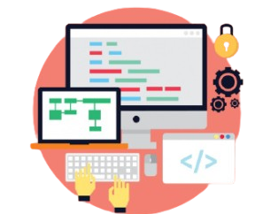
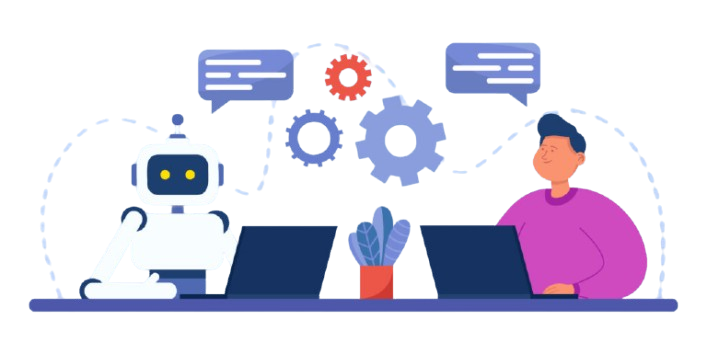
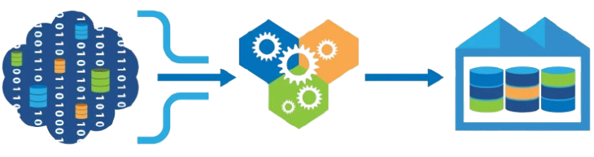
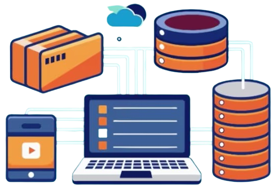
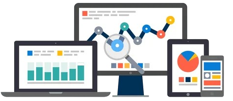
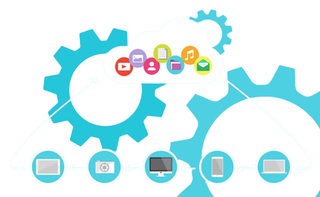
Innovación aplicada: Soluciones GenAI desarrolladas desde cero
Solución generativa que potencia la gestión de proyectos mediante el uso de inteligencia artificial generativa, automatizando la creación de minutas estructuradas, resúmenes ejecutivos y seguimientos de tareas a partir de grabaciones de reuniones. Integra procesamiento de lenguaje natural y técnicas avanzadas de prompt engineering para transformar conversaciones en conocimiento accionable y documentación profesional.
Implementación de sistemas complejos con múltiples agentes especializados que colaboran para resolver tareas. Cada agente tiene roles específicos: coordinador, extractor, clasificador, validador y generador.
Diseño de prompts robustos y escalables con técnicas avanzadas: Chain-of-Thought para razonamiento paso a paso, Few-Shot Learning con ejemplos contextuales, Structured Output con Pydantic para respuestas consistentes, y Self-Consistency para validación de resultados.
Sistema completo de búsqueda y generación aumentada por recuperación. Implementación de vector stores, embeddings semánticos, chunking estratégico, reranking de resultados, y generación contextual con citas verificables.
Integración de modelos Speech-to-Text de última generación (Whisper), diarización de hablantes, análisis semántico, extracción de entidades nombradas, clasificación de intenciones, y detección de sentimientos en contextos conversacionales.
Diseño e implementación de arquitectura escalable: Backend asíncrono con FastAPI, gestión de estados complejos, websockets para real-time, queue systems para procesamiento pesado, caching inteligente, y frontend reactivo optimizado para UX con IA.
Gestión avanzada de múltiples modelos de lenguaje: estrategias de fallback, token optimization, cost management, streaming responses, concurrent requests, rate limiting, error handling y monitoring de performance en producción.
Formación continua en las últimas tecnologías
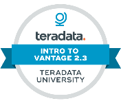
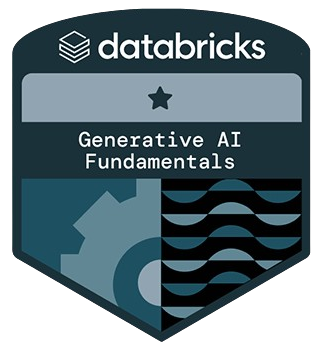
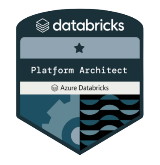
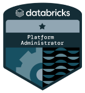
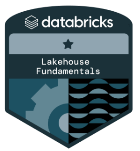
Formación especializada en gestión de proyectos, liderazgo de equipos y metodologías de planificación estratégica.
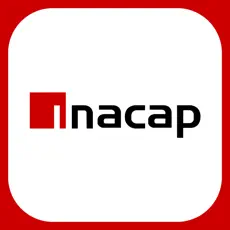
Título profesional con especialización en desarrollo de software, arquitectura de sistemas y bases de datos.
Descarga mi CV en formato PDF en el idioma de tu preferencia